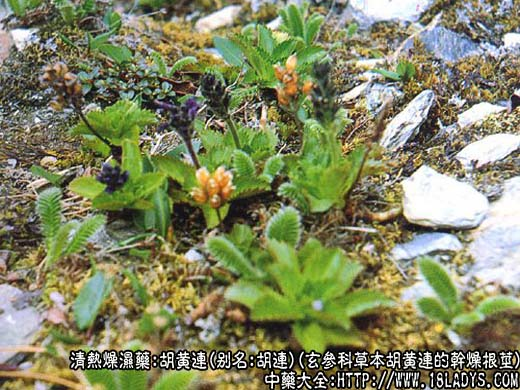
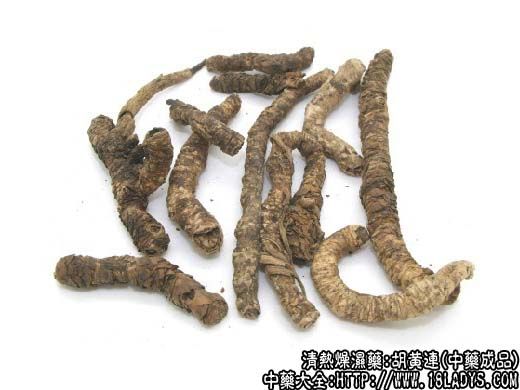
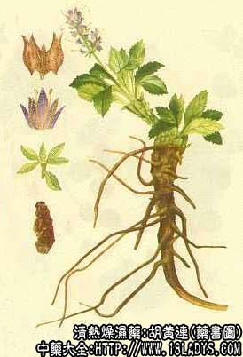

胡黄连为少常用中药。始载于宋《开宝本草》。
别名：胡连。
产地：过去均为进口，主产于印度，锡金，尼泊尔。现我国西藏日喀则的聂拉木、吉隆、亚东；山南的措那、洛札等地已有生长。均为野生。
性状鉴别：呈圆柱形，弯曲不直，形似枯树枝，长约2~9厘米，直径3~8毫米。表面灰黄色或灰棕色，部分皮黑，粗糙，有隆起的疙瘩，上端有横环纹，中、下部有纵皱，顶端处有残留叶基。质轻脆，易折断。
折断时有粉尘飞出。断面灰黑色或棕褐色中间有花白点4~7个，排列成环状，气微味苦。
以条粗，断面灰黑，有花白点为佳。
炮制：生用。
性味：苦寒。
归经：入肝、胃、大肠径。
功能：清热除湿，消疳。
主治：阴虚发热，小儿疳积，湿热下痢。
了解更多关于黄连，还为您推荐